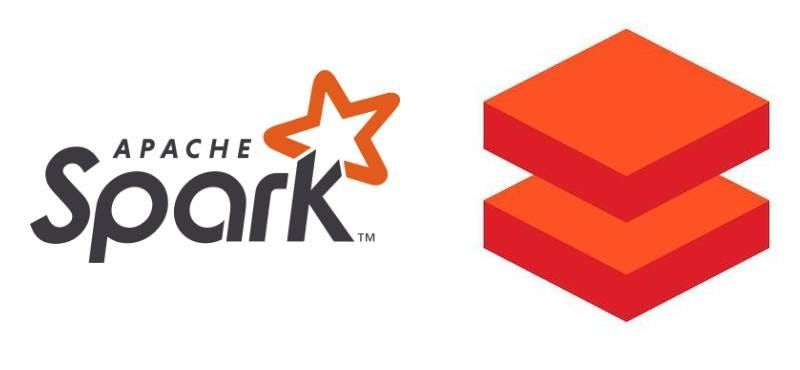

Welcome to our Technology Stack At KMR
we pride ourselves on harnessing the power of cutting-edge technologies to deliver innovative data solutions. Our robust technology stack is carefully curated to ensure optimal performance, scalability, and flexibility.
- SQL
- Python
- Databricks
- Azure Cloud Services


What can we achieve?
By combining these technologies, we empower organizations to unlock the full potential of their data assets and gain a competitive edge in today's data-driven world. Whether you're looking to optimize operations, improve customer experiences, or drive innovation, our expert team is here to help you succeed. Ready to take your data initiatives to the next level? Contact us today to learn more about how our technology-driven approach can transform your business.